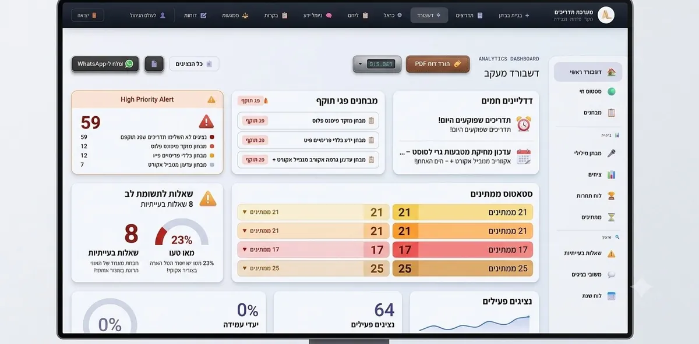

בכל עסק יש "דנה" — העובדת הוותיקה שיודעת בעל פה איך מטפלים בכל מקרה חריג, איפה נמצא כל מסמך, ומה הנוהל המדויק שאף אחד לא טרח לכתוב. זה עובד מצוין, עד שדנה יוצאת לחופשה, חולה, או עוזבת.
הסיכון שאף אחד לא רואה עד שהוא קורה
ידע שקיים רק בראש של אדם אחד הוא נכס שביר. עובד חדש שמתחיל, שאלה חוזרת מלקוח, מקרה חריג שדורש טיפול מיוחד — כל אלה תלויים בזמינות של מישהו ספציפי. כשהוא לא זמין, התהליך נעצר או נעשה בצורה לא עקבית.
למה מסמך אחד בגוגל דרייב לא מספיק
כמעט כל עסק "מנסה" בשלב מסוים לרכז נהלים במסמך משותף. הבעיה: בלי מבנה וחיפוש חכם, המסמך הזה הופך תוך חודשים לארכיון בלתי ניתן לניווט — גרסאות ישנות, כפילויות, ואף אחד לא בטוח מה עדיין רלוונטי.
מה מאגר ידע ארגוני אמיתי נותן
מערכת ייעודית לניהול ידע מאפשרת חיפוש בשפה חופשית ("איך מטפלים בביטול הזמנה?") ומקבלת תשובה מדויקת, לא רשימת קבצים לסינון ידני. היא גם שומרת היסטוריית גרסאות, כך שרואים מתי נוהל השתנה ולמה — ומעניקה הרשאות לפי תפקיד, כדי שכל אחד יראה רק את מה שרלוונטי לו.

- חיפוש חכם בשפה חופשית מתוך כל מאגר הידע
- ניהול גרסאות ועדכונים למסמכים ונהלים
- הרשאות צפייה ועריכה לפי צוות ותפקיד
- מענה אוטומטי לשאלות נפוצות מתוך הידע הקיים
הידע הכי יקר בעסק הוא זה שאף אחד לא כתב — כי "כולם פה יודעים". השאלה היא מה קורה כש"כולם" משתנה.
מה קורה כשעובד חדש מצטרף
בלי מאגר ידע מסודר, עובד חדש לומד מבעל פה — מה שתלוי בזמינות של מי שמלמד אותו ובזיכרון שלו. עם מאגר ידע שאפשר לחפש בו, עובד חדש מקבל תשובה עקבית בכל פעם שהוא שואל, לא תלוי אם מי שאחראי עליו נמצא הפעם או לא. זה גם מקצר את תקופת ההכשרה, כי לא צריך לחכות לפנאי של מישהו כדי לקבל תשובה לשאלה בסיסית.
איפה מתחילים
לא צריך לתעד הכול בבת אחת. מתחילים מהשאלות שחוזרות הכי הרבה — אלה שנשאלות שוב ושוב באותה מחלקה. ברגע שהתשובות האלה נגישות במאגר ולא רק בזיכרון של מישהו, כבר רואים הבדל בקצב ובעקביות של העבודה. מערכות ניהול ידע כאלה, כמו LearnIx שאנחנו ב-A.L Systems מפתחים, הן אחד התחומים שאנחנו מתמחים בהם.
מסמך משותף מול מאגר ידע ייעודי
| מה קורה בפועל | מסמך משותף | מאגר ידע ארגוני |
|---|---|---|
| מציאת תשובה | גלילה וחיפוש ידני בקבצים | חיפוש בשפה חופשית |
| גרסה עדכנית | לא ברור מה רלוונטי | היסטוריית גרסאות ברורה |
| הרשאות לפי תפקיד | כולם רואים הכול | גישה מדויקת לפי צוות |
| תלות באדם ספציפי | גבוהה | הידע נגיש לכולם |
למי זה הכי מתאים
לכל עסק שתלוי בידע שקיים בראש של עובד ספציפי — נהלים, תשובות ללקוחות, טיפול במקרים חריגים — ורוצה שהידע הזה יהיה נגיש לכולם, לא רק כשה"דנה" של העסק נמצאת.
שאלות נפוצות
למה מסמך משותף בגוגל דרייב לא מספיק?
בלי מבנה וחיפוש חכם, מסמך משותף הופך תוך חודשים לארכיון בלתי ניתן לניווט — גרסאות ישנות, כפילויות, ואף אחד לא בטוח מה עדיין רלוונטי.
איך מחפשים תשובה במאגר ידע ארגוני?
בשפה חופשית — למשל "איך מטפלים בביטול הזמנה?" — ומקבלים תשובה מדויקת, לא רשימת קבצים לסינון ידני.
המערכת שומרת היסטוריה כשנוהל משתנה?
כן. ניהול גרסאות מאפשר לראות מתי נוהל השתנה ולמה, כך שאף אחד לא עובד בטעות לפי גרסה ישנה שעודכנה.
איפה כדאי להתחיל אם יש הרבה נהלים לתעד?
לא בבת אחת. מתחילים מהשאלות שחוזרות הכי הרבה באותה מחלקה. ברגע שהתשובות האלה נגישות במאגר, כבר רואים הבדל בקצב ובעקביות של העבודה.